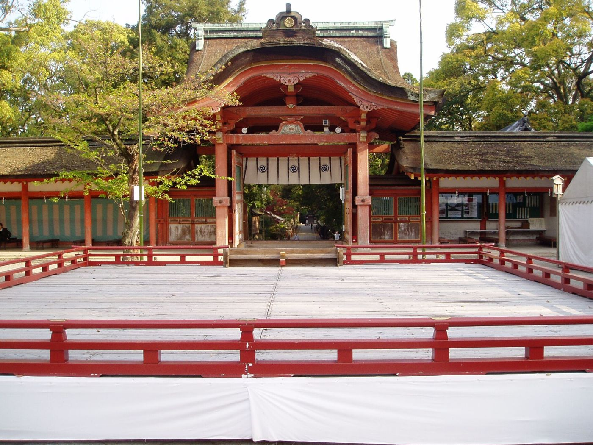

第7時 大分の獅子舞について調べよう
Lesson 07
大分の獅子舞
大分八幡宮と獅子舞の年表
大分八幡宮は、1300年前に建てられたと伝えられる神社です。ここの秋のお祭り「放生会」は、一度とだえたことがあります。それを復活させたとき、村の人たちは京都まで行って獅子舞を習ってきました。今日は、その獅子舞を調べます。
10/27（火）4校時
 写真：そらみみ／CC BY-SA 4.0／Wikimedia Commons
写真：そらみみ／CC BY-SA 4.0／Wikimedia CommonsLesson 7 / Daibu Shishimai
第7時 大分の獅子舞について調べよう
Lesson 07
大分八幡宮と獅子舞の年表
大分八幡宮は、1300年前に建てられたと伝えられる神社です。ここの秋のお祭り「放生会」は、一度とだえたことがあります。それを復活させたとき、村の人たちは京都まで行って獅子舞を習ってきました。今日は、その獅子舞を調べます。
10/27（火）4校時
写真：そらみみ／CC BY-SA 4.0／Wikimedia CommonsLesson 7 / Daibu Shishimai
Look

ここでは写真や資料をよく見て、気づいたことを言う。先生が「資料ア」と言ったら、アの印がついたものを見る。



出典：大分八幡宮「放生会」「由緒と歴史」、福岡県文化財データベース、ふくおか県芸術文化祭、放生会のチラシをもとに作成
青くぬった丸は大きなできごと、赤い丸は止まったり、へったりしたとき。
| だれが | 何をする |
|---|---|
| 獅子（2頭） | 雄の獅子は宝珠をのせた赤い頭、雌の獅子は角のある黒い頭。決まった家の若者がつとめる |
| 頭取 | 笛をふく |
| 若者 | 小太鼓をたたく |
| 子ども | 大太鼓をたたく（小学生以下） |
| 銅拍子 | 金属の打楽器で、音を合わせる |
出典：大分八幡宮「放生会」、福岡県文化財データベース、西日本新聞（2025年）
獅子舞は10時25分と14時。流鏑馬・餅まき・神幸祭もある。
放生会（大分八幡宮） →収穫に感謝する祭り。最終日には夜神楽。
椿八幡宮（飯塚市観光ポータル） →Think

ここでは先生が問いを出したら、付箋をタップしてはがす。まずノートに書いてから、となりの人と話す。
大分の獅子舞は、どのようなもので、いつから続いているのだろう
年表を見て、放生会がとだえたときと、復活したときをさがそう。獅子舞は、いつ、どうやって始まった？
1720年・1721年・1724年の行。
習ってきた元の石清水八幡宮では絶えたのに、大分で300年続いているのは、なぜだろう。
だれが、どんな思いで続けてきた？ 次の時間に調べる。
ノートに書くこと
Find out

ここではリンクをひらいて、「確かめること」にチェックを入れていく。わかったことは、下の「しらべメモ」かノートに書く。「だれが出した・いつの情報か」もいっしょにメモする。
「放生会」のページ。獅子舞を習ってきたのはだれ？ 何人で、何か月？
「由緒と歴史」。大分八幡宮ができたのは何年？ 「大分」という名前のわけは？
獅子舞では、だれが、どの役をする？
九州国立博物館は、どんな舞だと説明している？
地図で、大分八幡宮をさがそう。
しらべメモこのタブレットに残ります。名前は書かないでね。
Words

ここでは分からない言葉が出てきたら、ここにもどって読む。
Wrap up
ここでは授業の終わりに、先生が「まとめ」と言ったら付箋をはがして、いっしょに読む。自分のまとめと、くらべてみよう。
Lesson 07 — Wrap up
大分八幡宮の放生会は、一度とだえたが、1721年に復活した。そのとき、村の人たちが京都の石清水八幡宮まで行って獅子舞を習い、1724年から奉納してきた。習った元の神社では絶えてしまったが、大分では300年続き、県の文化財になっている。
大分の獅子舞は、だれが、どのように守ってきたのだろう。